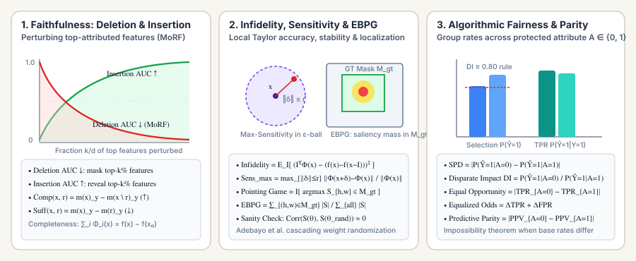

Explainability (XAI), Attribution Faithfulness & Fairness Metrics: Deletion/Insertion AUC, Comprehensiveness, Sufficiency, Infidelity, and Equalized Odds
A visually appealing saliency heatmap or feature attribution vector $\Phi(f, x)$ is not automatically a faithful explanation of what a neural network actually computed. Here we formalize the mathematical evaluation of explainability and fairness: perturbation-based faithfulness curves (Deletion/MoRF and Insertion AUC), discrete rationale metrics (ERASER Comprehensiveness and Sufficiency), axiomatic Completeness, local Taylor Infidelity and Max-Sensitivity, Energy-Based Pointing Games, Adebayo's Weight Randomization Sanity Checks, and group fairness metrics (Demographic Parity, Disparate Impact, Equal Opportunity, Equalized Odds, and the Impossibility Theorem).

1. Faithfulness vs. Plausibility: Two Orthogonal Axes of XAI Evaluation
Let $f : \mathbb{R}^d \to \mathbb{R}$ be a scalar model output (such as the target-class logit $z_y(x)$ or probability $p_y(x)$) and let $\Phi(f, x) \in \mathbb{R}^d$ be an attribution method (e.g., Vanilla Gradients $\nabla_x f(x)$, Input$\times$Gradient, Integrated Gradients, Grad-CAM, LIME, or KernelSHAP) that assigns an importance score $\Phi_i(f, x)$ to each input coordinate $i \in \{1, \dots, d\}$.
Jacovi and Goldberg (2020) emphasized a foundational distinction that governs every XAI metric:
- Faithfulness (Fidelity to the Model): Does $\Phi(f, x)$ accurately reflect the true internal causal decision mechanism of the specific model $f$? Even if $f$ relies on a spurious background watermark (a Clever Hans shortcut), a faithful explanation must highlight that background watermark.
- Plausibility (Alignment with Humans): Does $\Phi(f, x)$ match the region or rationale a human domain expert considers relevant? High plausibility on a biased model is actually a failure of faithfulness if it conceals the model's reliance on spurious cues.
2. Perturbation Faithfulness Curves: Deletion (MoRF), Insertion, and ROAR
Given attribution scores $\Phi(f, x) \in \mathbb{R}^d$, sort the input coordinates in descending order of attribution:
Let $S_k = \{\pi_1, \dots, \pi_k\}$ denote the top-$k$ Most Relevant First (MoRF) features, and let $x^{(0)}$ be an uninformative baseline input (such as a zero tensor, Gaussian-blurred image, or `[MASK]` token embedding).
2.1 Deletion Curve & Deletion AUC ($\downarrow$ lower is better)
Starting from the original input $x$, we progressively replace the top-$k$ most important features $S_k$ with their baseline values $x^{(0)}$:
If $\Phi$ truly identified the features driving $f(x)$, ablating the very first few features ($k \ll d$) causes $c_{\text{del}}(k/d)$ to plummet toward zero. The Deletion AUC integrates this curve via the trapezoidal rule over $m$ perturbation steps $0 = \alpha_0 < \alpha_1 < \dots < \alpha_m = 1$:
2.2 Insertion Curve & Insertion AUC ($\uparrow$ higher is better)
Deleting pixels or tokens one by one can create sharp artificial edges or grammar fragments that push $x^{\text{del}}(k)$ off the training manifold. Petsiuk et al. (2018) paired Deletion with the complementary Insertion Curve: starting from the blurred/masked canvas $x^{(0)}$, we progressively insert the top-$k$ features $S_k$ from $x$:
Similarly, Hooker et al. (2019) proposed ROAR (RemOve And Retrain), which retrains the classifier on the ablated dataset at each fraction $\alpha \in \{10\%, 30\%, 50\%, 70\%, 90\%\}$ so that accuracy drops reflect genuine information removal rather than Out-of-Distribution (OOD) shift.
3. Discrete Rationale Metrics: ERASER Comprehensiveness, Sufficiency, and AOPC
In NLP and multimodal reasoning, explanations are often discrete token subsets (rationales) $r \subseteq x$ of length $|r| \ll |x|$. The ERASER benchmark (DeYoung et al. 2020) evaluates a rationale $r$ using two complementary differences on the predicted probability $m(x)_y$ of the originally predicted class $y$:
- Comprehensiveness ($\uparrow$) asks: "Were all influential tokens included in $r$?" If removing $r$ causes $m(x \setminus r)_y$ to collapse from $0.95$ to $0.15$, then $\text{Comp} = 0.80$, proving $x \setminus r$ cannot support the prediction without $r$.
- Sufficiency ($\downarrow$) asks: "Are the tokens in $r$ alone enough to reproduce the prediction?" If feeding only $r$ yields $m(r)_y = 0.92$, then $\text{Suff} = 0.95 - 0.92 = 0.03$, confirming $r$ is self-sufficient.
For continuous token rankings, averaging comprehensiveness over top-$k$ prefixes $S_1, \dots, S_K$ gives Samek et al.'s Area Over the Perturbation Curve (AOPC):
4. Axiomatic Completeness, Explanation Infidelity, and Max-Sensitivity
4.1 Completeness (Efficiency Axiom) & Convergence Delta
Path-attribution methods such as Integrated Gradients (IG),$$\text{IG}_i(x) = (x_i - x_i^{(0)})\int_0^1 \frac{\partial f\bigl(x^{(0)} + \alpha(x - x^{(0)})\bigr)}{\partial x_i}\,d\alpha,$$and Shapley Values (SHAP) satisfy the exact Completeness Axiom: the attributions sum exactly to the output difference from baseline:
When $\text{IG}$ is approximated numerically with $M$ Riemann steps (e.g., $M = 50$), libraries such as Captum report the Convergence Delta as an internal numerical accuracy check:
4.2 Explanation Infidelity ($\downarrow$)
Yeh et al. (2019) generalized Completeness and first-order Taylor accuracy into Explanation Infidelity. If we perturb $x$ by a random vector $\mathbf{I} \sim \mu_I$ (such as Gaussian noise, random feature masking, or superpixel ablation), a faithful linear attribution $\Phi(f, x)$ should predict the function drop $f(x) - f(x - \mathbf{I})$ via the inner product $\mathbf{I}^\top \Phi(f, x)$:
Notice how $\text{INFD}$ unifies classical attributions:
- As perturbation covariance shrinks ($\mathbf{I} \sim \mathcal{N}(\mathbf{0}, \epsilon^2 \mathbf{I}_d)$ with $\epsilon \to 0$), $f(x) - f(x-\mathbf{I}) \approx \mathbf{I}^\top \nabla_x f(x)$, so minimizing $\text{INFD}$ yields the exact Gradient $\nabla_x f(x)$.
- When $\mathbf{I} = x - x^{(0)}$ is the deterministic full-baseline jump, minimizing $\text{INFD}$ enforces the Completeness Axiom $\sum_i (x_i - x_i^{(0)})\tilde{\Phi}_i = f(x) - f(x^{(0)})$.
4.3 Max-Sensitivity ($\downarrow$ Stability of Explanations)
Ghorbani et al. (2019) demonstrated that gradient-based saliency maps are fragile: adding imperceptible noise $\delta$ with $\|\delta\|_\infty \le \epsilon$ that leaves $f(x + \delta) \approx f(x)$ unchanged can completely scramble $\Phi(f, x + \delta)$. Yeh et al. (2019) quantified this instability via Max-Sensitivity over a radius-$r$ neighborhood:
SmoothGrad ($\Phi_{\text{SG}}(x) = \mathbb{E}_{\xi \sim \mathcal{N}(0, \sigma^2 I)}[\Phi(f, x + \xi)]$) explicitly regularizes $\text{SENS}_{\max}$ by convolving the noisy gradient surface with a Gaussian kernel.
5. Localization & Sanity Checks: Pointing Game, EBPG, and Weight Randomization
5.1 Pointing Game and Energy-Based Pointing Game (EBPG)
When evaluating visual attributions against a ground-truth object segmentation mask or bounding box $M_{\text{gt}} \subset \{1, \dots, H\} \times \{1, \dots, W\}$:
-
Pointing Game Accuracy (Zhang et al. 2018): Checks whether the single maximum-saliency pixel $(h^*, w^*) = \arg\max_{(h,w)} |S_{h,w}|$ falls inside $M_{\text{gt}}$:
$$\text{PointingAcc} = \frac{\#\text{Hits}}{\#\text{Hits} + \#\text{Misses}}, \qquad \text{Hit} \iff \arg\max_{(h,w)} |S_{h,w}| \in M_{\text{gt}}$$
-
Energy-Based Pointing Game (EBPG, Wang et al. 2020): Instead of checking only the single peak pixel, $\text{EBPG}$ measures the fraction of total attribution energy concentrated inside the ground-truth object mask:
$$\text{EBPG}(S, M_{\text{gt}}) = \frac{\sum_{(h, w) \in M_{\text{gt}}} |S_{h, w}|}{\sum_{h=1}^{H}\sum_{w=1}^{W} |S_{h, w}|} \in [0, 1]$$
5.2 Adebayo's Sanity Checks for Saliency Maps
Why can a saliency map score high on Pointing Game and $\text{EBPG}$ yet still be completely unfaithful? Adebayo et al. (2018) ran a devastating experiment: they took a trained CNN with parameters $\theta$, progressively randomized the weights layer-by-layer from the top classification head (`fc`) down to `conv1` producing $\tilde{\theta}_{\ge l}$, and measured the rank correlation $\rho_{\text{Spearman}}\bigl(|S(x; \theta)|,\, |S(x; \tilde{\theta}_{\ge l})|\bigr)$ and $\text{SSIM}$.
6. Algorithmic Fairness Metrics: Demographic Parity, Disparate Impact, Equalized Odds & Impossibility
When deep learning models make high-stakes decisions (credit underwriting, medical triage, hiring, recidivism risk), overall accuracy or AUC can mask systematic disparities across a protected demographic attribute $A \in \{0, 1\}$ (where $A=0$ denotes the unprivileged group and $A=1$ denotes the privileged group).
6.1 Independence Criteria: Demographic Parity & Disparate Impact ($\hat{Y} \perp A$)
Demographic (Statistical) Parity requires that the positive selection rate $P(\hat{Y}=1 \mid A=a)$ be equal across groups, measured either as an additive difference or multiplicative ratio:
6.2 Separation Criteria: Equal Opportunity & Equalized Odds ($\hat{Y} \perp A \mid Y$)
When the true base rate $P(Y=1 \mid A=0) \ne P(Y=1 \mid A=1)$ differs across groups, enforcing Demographic Parity ($\hat{Y} \perp A$) forces a perfect predictor $\hat{Y} = Y$ to make intentional errors! Hardt, Price, and Srebro (2016) resolved this by conditioning on the true outcome $Y$:
-
Equal Opportunity Difference ($\text{EOD}$): Requires equal True Positive Rates ($\text{TPR}_a = P(\hat{Y}=1 \mid Y=1, A=a)$) among qualified individuals ($Y=1$):
$$\text{EOD} = \bigl|\text{TPR}_{A=0} - \text{TPR}_{A=1}\bigr| = \bigl|P(\hat{Y}=1 \mid Y=1, A=0) - P(\hat{Y}=1 \mid Y=1, A=1)\bigr|$$
-
Equalized Odds ($\text{EOdds}$): Requires both equal True Positive Rates and equal False Positive Rates ($\text{FPR}_a = P(\hat{Y}=1 \mid Y=0, A=a)$) across groups:
$$\Delta_{\text{EOdds}} = \frac{1}{2}\Bigl(\bigl|\text{TPR}_{A=0} - \text{TPR}_{A=1}\bigr| + \bigl|\text{FPR}_{A=0} - \text{FPR}_{A=1}\bigr|\Bigr)$$
6.3 Sufficiency Criteria ($\text{Predictive Parity}$, $Y \perp A \mid \hat{Y}$) & The Fairness Impossibility Theorem
Predictive Parity requires equal Precision ($\text{PPV}_a = P(Y=1 \mid \hat{Y}=1, A=a)$) across groups. Using Bayes' rule, for any group $a$ with base prevalence $\pi_a = P(Y=1 \mid A=a)$:
Look closely at this identity (Chouldechova 2017): if two groups have unequal base rates ($\pi_0 \ne \pi_1$) and our classifier is imperfect ($0 < \text{TPR}_a < 1, \text{PPV}_a < 1$), then satisfying Predictive Parity ($\text{PPV}_0 = \text{PPV}_1$) and Equal Opportunity ($\text{TPR}_0 = \text{TPR}_1$) mathematically forces $\text{FPR}_0 \ne \text{FPR}_1$, violating Equalized Odds! Every real-world fairness policy must explicitly choose which error trade-off is normatively appropriate.
7. Complete Worked Numerical Examples
7.1 Worked Deletion/Insertion AUC and ERASER Comprehensiveness & Sufficiency
Suppose a sentiment classifier outputs $m(x)_y = 0.90$ on a $4$-token review $x = (w_1, w_2, w_3, w_4)$. An attribution method ranks tokens in MoRF order $(w_2, w_4, w_1, w_3)$.
-
Deletion curve at fractions $\alpha \in \{0, 0.25, 0.50, 0.75, 1.00\}$ yields confidences $c_{\text{del}} = [0.90,\; 0.30,\; 0.10,\; 0.06,\; 0.04]$:
$$\text{AUC}_{\text{del}} = 0.25\left(\frac{0.90+0.30}{2} + \frac{0.30+0.10}{2} + \frac{0.10+0.06}{2} + \frac{0.06+0.04}{2}\right) = 0.25(0.60 + 0.20 + 0.08 + 0.05) = 0.2325$$
-
Insertion curve at $\alpha \in \{0, 0.25, 0.50, 0.75, 1.00\}$ yields confidences $c_{\text{ins}} = [0.04,\; 0.72,\; 0.86,\; 0.88,\; 0.90]$:
$$\text{AUC}_{\text{ins}} = 0.25\left(\frac{0.04+0.72}{2} + \frac{0.72+0.86}{2} + \frac{0.86+0.88}{2} + \frac{0.88+0.90}{2}\right) = 0.25(0.38 + 0.79 + 0.87 + 0.89) = 0.7325$$
-
ERASER Rationale $r = \{w_2, w_4\}$ ($\alpha = 0.50$): Since $m(x \setminus r)_y = c_{\text{del}}(0.50) = 0.10$ and $m(r)_y = c_{\text{ins}}(0.50) = 0.86$:
$$\text{Comprehensiveness}(x, r) = 0.90 - 0.10 = 0.8000, \qquad \text{Sufficiency}(x, r) = 0.90 - 0.86 = 0.0400$$
7.2 Worked Fairness Audit Across Two Demographic Groups
Suppose a loan approval classifier is evaluated on $100$ applicants from Group $A=0$ ($\text{TP}=30, \text{FN}=20, \text{FP}=6, \text{TN}=44$) and $100$ applicants from Group $A=1$ ($\text{TP}=40, \text{FN}=10, \text{FP}=10, \text{TN}=40$):
- Selection Rates: $P(\hat{Y}=1 \mid A=0) = \frac{30+6}{100} = 0.36$, and $P(\hat{Y}=1 \mid A=1) = \frac{40+10}{100} = 0.50$.
- Statistical Parity & Disparate Impact:
$$\text{SPD} = |0.36 - 0.50| = 0.1400, \qquad \text{DI} = \frac{0.36}{0.50} = 0.7200 < 0.80 \quad (\text{fails the } 4/5\text{ths rule})$$
- True Positive & False Positive Rates:
$$\text{TPR}_{A=0} = \frac{30}{30+20} = 0.60, \quad \text{TPR}_{A=1} = \frac{40}{40+10} = 0.80 \implies \text{EOD} = |0.60 - 0.80| = 0.2000$$ $$\text{FPR}_{A=0} = \frac{6}{6+44} = 0.12, \quad \text{FPR}_{A=1} = \frac{10}{10+40} = 0.20 \implies \Delta_{\text{EOdds}} = \frac{0.20 + 0.08}{2} = 0.1400$$
8. Reference Python Implementation
from typing import Sequence, Dict
def trapezoidal_auc(curve: Sequence[float]) -> float:
m = len(curve) - 1
if m <= 0:
return 0.0
step = 1.0 / m
return sum(step * 0.5 * (curve[j - 1] + curve[j]) for j in range(1, len(curve)))
def eraser_rationale_metrics(p_full: float, p_without_r: float, p_only_r: float) -> Dict[str, float]:
return {
"comprehensiveness": p_full - p_without_r,
"sufficiency": p_full - p_only_r,
}
def energy_based_pointing_game(saliency: Sequence[Sequence[float]], mask: Sequence[Sequence[int]]) -> float:
inside = sum(abs(s) for row_s, row_m in zip(saliency, mask) for s, m in zip(row_s, row_m) if m > 0)
total = sum(abs(s) for row_s in saliency for s in row_s)
return inside / total if total > 0 else 0.0
def group_fairness_audit(cm_a0: Dict[str, int], cm_a1: Dict[str, int]) -> Dict[str, float]:
def rates(cm: Dict[str, int]):
n = cm["TP"] + cm["FN"] + cm["FP"] + cm["TN"]
sel = (cm["TP"] + cm["FP"]) / n
tpr = cm["TP"] / (cm["TP"] + cm["FN"])
fpr = cm["FP"] / (cm["FP"] + cm["TN"])
ppv = cm["TP"] / (cm["TP"] + cm["FP"])
return sel, tpr, fpr, ppv
sel0, tpr0, fpr0, ppv0 = rates(cm_a0)
sel1, tpr1, fpr1, ppv1 = rates(cm_a1)
return {
"SPD": abs(sel0 - sel1),
"Disparate_Impact": sel0 / sel1 if sel1 > 0 else 0.0,
"Equal_Opportunity_Diff": abs(tpr0 - tpr1),
"Equalized_Odds_Diff": 0.5 * (abs(tpr0 - tpr1) + abs(fpr0 - fpr1)),
"Predictive_Parity_Diff": abs(ppv0 - ppv1),
}
if __name__ == "__main__":
del_curve = [0.90, 0.30, 0.10, 0.06, 0.04]
ins_curve = [0.04, 0.72, 0.86, 0.88, 0.90]
print(f"Deletion AUC = {trapezoidal_auc(del_curve):.4f}")
print(f"Insertion AUC = {trapezoidal_auc(ins_curve):.4f}")
print("ERASER:", eraser_rationale_metrics(0.90, 0.10, 0.86))
audit = group_fairness_audit(
{"TP": 30, "FN": 20, "FP": 6, "TN": 44},
{"TP": 40, "FN": 10, "FP": 10, "TN": 40},
)
for k, v in audit.items():
print(f"{k:24s} = {v:.4f}")9. Self-Check Questions & Summary
Question 1: Why should Comprehensiveness and Sufficiency always be reported together rather than optimizing Comprehensiveness alone?
Answer: If you evaluate only Comprehensiveness $m(x)_y - m(x \setminus r)_y$ without a sparsity constraint or Sufficiency check, an explainer can trivially select 100% of the input tokens ($r = x$), leaving $x \setminus r = \emptyset$ and achieving maximum Comprehensiveness without actually localizing the rationale! Conversely, selecting a tiny single-word token that happens to bias the classifier might yield low Sufficiency error while omitting two other critical clauses (low Comprehensiveness).
Question 2: What does a high Energy-Based Pointing Game ($\text{EBPG} = 0.85$) combined with a failing Adebayo Weight Randomization check tell you about an attribution method?
Answer: It tells you that the attribution method acts like a bottom-up image edge or contrast detector (such as Guided Backpropagation): because foreground objects in standard benchmarks usually contain strong visual edges, the map concentrates energy inside the object mask ($\text{EBPG} = 0.85$), yet it is completely insensitive to the learned parameters of the classifier—meaning it is plausible to human eyes but unfaithful to the model.